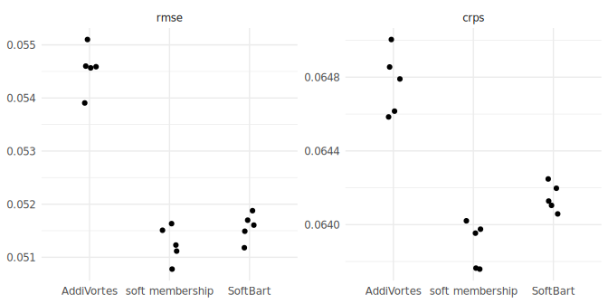
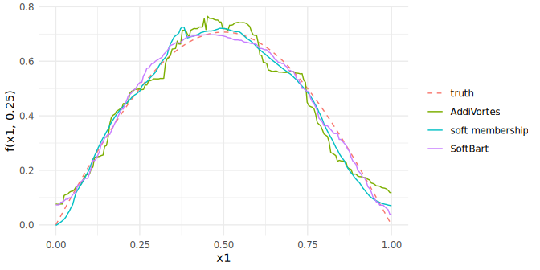
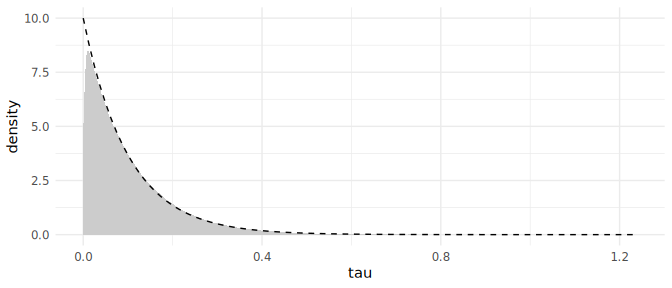
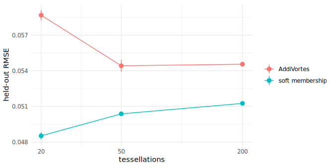
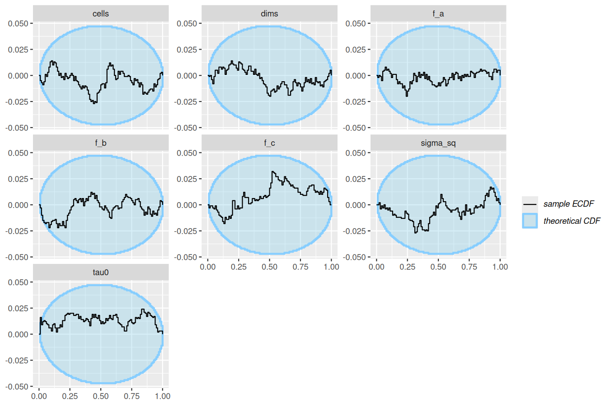
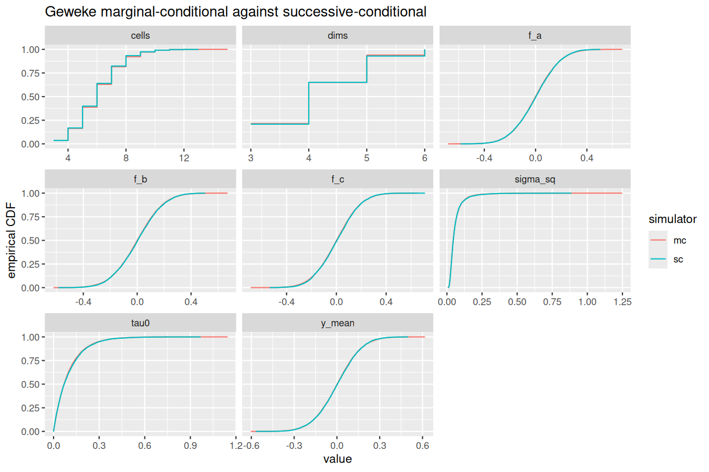

Needs a build made with
THIESSEN_EXPERIMENTAL=1 R CMD INSTALL r; the experimental page has the catalogue and the
rule.
Introduction
Under the published model an observation belongs to the cell whose centre is nearest, so each tessellation is a piecewise-constant function with a step at every cell boundary. Soft membership replaces that rule: an observation belongs to every cell, with a weight that falls off with its distance to each centre under a per-tessellation bandwidth tau, and the tessellation’s value is the weighted mean of its cell values. As tau falls to 0 the hard rule returns. This is the Voronoi analogue of soft BART (Linero and Yang 2018), where the kernel acts on the distance to each centre rather than on a chain of split gates. Reach for it when the truth is smooth.
Prerequisite: BART (Chipman, George and McCulloch 2010) and AddiVortes (Stone and Gosling 2025). The model description page has the notation.
The model
w_k(x) proportional to exp(-d_k^2(x) / (2 tau^2)), sum_k w_k(x) = 1
g(x; T, M) = sum_k w_k(x) mu_k
tau ~ Exponential(rate), rate = 10 by defaultwith d_k^2(x) the squared distance from x to centre k over the
tessellation’s active covariates, the same quantity the hard rule
minimises, and tau a bandwidth on the scaled covariate space, so the
prior mean bandwidth is a tenth of a column’s range (the SoftBart
tau_rate default). The cell values are drawn jointly from
their conjugate normal, the structural moves integrate them out, and tau
moves by a Metropolis step on its logarithm. The statement in full is
the “Soft membership” section of docs/models.md
and the derivation note is crates/thiessen/src/cells.rs.
Constant cell basis and constant spread only.
Example
The surface is sin(pi x1) cos(pi x2) on the unit square, observed with noise of standard deviation 0.1 at 300 rows, with 500 held-out rows and their noise-free values. The published rule, labelled AddiVortes in the tables, and soft membership are fitted at the default ensemble size of 200 tessellations, on four chains, at the same five seeds. The schedule is 1000 burn-in and 1000 kept sweeps per chain, longer than the 300 and 300 the other pages in this group use. Even so every fit warns: the largest R-hat over the four chains sits between 1.02 and 1.04 for both rules, above the 1.01 the check asks for, on the cell count, the residual scale or a training row. The mixing table below puts that beside SoftBart on the same quantity.
source("_setup.R")
data <- smooth_surface(n = 300, sd = 0.1, seed = 1)
schedule <- general_params(burn_in = 1000, draws = 1000)
hard <- thiessen_control(tessellations = 200, general_params = schedule)
soft <- thiessen_control(
tessellations = 200, general_params = schedule,
mean_params = term_params(geometry = geometry_params(membership = soft_membership()))
)
fits <- paired_fits(data, list(AddiVortes = hard, "soft membership" = soft), seeds)
#> Warning in thiessen(data$train$x, data$train$y, control, seed = seed): The
#> chains may not have converged: largest R-hat 1.037 (threshold 1.01), smallest
#> effective sample size 121 (threshold 400). Run more draws or more chains.
#> Warning in thiessen(data$train$x, data$train$y, control, seed = seed): The
#> chains may not have converged: largest R-hat 1.019 (threshold 1.01), smallest
#> effective sample size 280 (threshold 400). Run more draws or more chains.
#> Warning in thiessen(data$train$x, data$train$y, control, seed = seed): The
#> chains may not have converged: largest R-hat 1.025 (threshold 1.01), smallest
#> effective sample size 214 (threshold 400). Run more draws or more chains.
#> Warning in thiessen(data$train$x, data$train$y, control, seed = seed): The
#> chains may not have converged: largest R-hat 1.032 (threshold 1.01), smallest
#> effective sample size 246 (threshold 400). Run more draws or more chains.
#> Warning in thiessen(data$train$x, data$train$y, control, seed = seed): The
#> chains may not have converged: largest R-hat 1.017 (threshold 1.01), smallest
#> effective sample size 326 (threshold 400). Run more draws or more chains.
#> Warning in thiessen(data$train$x, data$train$y, control, seed = seed): The
#> chains may not have converged: largest R-hat 1.015 (threshold 1.01), smallest
#> effective sample size 389 (threshold 400). Run more draws or more chains.
#> Warning in thiessen(data$train$x, data$train$y, control, seed = seed): The
#> chains may not have converged: largest R-hat 1.015 (threshold 1.01), smallest
#> effective sample size 377 (threshold 400). Run more draws or more chains.
#> Warning in thiessen(data$train$x, data$train$y, control, seed = seed): The
#> chains may not have converged: largest R-hat 1.027 (threshold 1.01), smallest
#> effective sample size 280 (threshold 400). Run more draws or more chains.
#> Warning in thiessen(data$train$x, data$train$y, control, seed = seed): The
#> chains may not have converged: largest R-hat 1.019 (threshold 1.01), smallest
#> effective sample size 293 (threshold 400). Run more draws or more chains.
#> Warning in thiessen(data$train$x, data$train$y, control, seed = seed): The
#> chains may not have converged: largest R-hat 1.017 (threshold 1.01), smallest
#> effective sample size 359 (threshold 400). Run more draws or more chains.
summary(fits[["soft membership"]][[1]])
#> AddiVortes fit
#> Call: thiessen(x = data$train$x, y = data$train$y, control = control, seed = seed)
#> gaussian model, 300 observations, 2 covariates
#> 200 tessellations, 4000 draws kept after 1000 burn-in, thinning 1
#>
#> Residuals:
#> 2.5% 25% 50% 75% 97.5%
#> -0.144487015 -0.049684122 0.002307559 0.052776099 0.145839261
#>
#> sigma:
#> 2.5% 25% 50% 75% 97.5%
#> 0.08727814 0.09314698 0.09656467 0.10007220 0.10700824
#>
#> In-sample RMSE 0.0781
#> 4 chains, largest R-hat 1.015, smallest effective sample size 389
#> Warning: The chains may not have converged: largest R-hat 1.015 (threshold 1.01), smallest effective sample size 389 (threshold 400). Run more draws or more chains.The comparator is SoftBart (Linero and Yang 2018), the tree ensemble this rule adapts, with the same bandwidth prior; it is fitted with 200 trees on the same schedule as four chains, one run per chain seed on four cores, pooled as one fit, so it is treated as the two rules are.
library(SoftBart)
frame <- data.frame(data$train$x, y = data$train$y)
grid <- cbind(x1 = seq(0, 1, length.out = 200), x2 = 0.25)
rows <- rbind(data$train$x, data$test$x, grid)
softbart <- lapply(seeds, function(seed) {
softbart_chains(y ~ x1 + x2, frame, rows, seeds = 10 * seed + 1:4, num_tree = 200,
opts = Opts(num_burn = 1000, num_save = 1000))
})The SoftBart chains run in forked workers, so each returns its draws of the mean at the rows named up front: the training rows, the held-out rows and the transect of Figure 2.
Every method is scored on the same 500 held-out rows through its predictive distribution: the root mean squared error of the posterior mean against the noise-free truth, the coverage and mean width of the central 95 per cent predictive interval, the CRPS (lower is better) and the log score (higher is better) of the held-out response, both exact for the predictive mixture (Jordan, Krueger and Lerch 2019). The mean over the five seeds with its standard error in parentheses:
| model | RMSE | coverage | width | CRPS | log score |
|---|---|---|---|---|---|
| AddiVortes | 0.055 (0.000) | 0.964 (0.001) | 0.479 (0.000) | 0.065 (0.000) | 0.739 (0.001) |
| soft membership | 0.051 (0.000) | 0.960 (0.000) | 0.461 (0.000) | 0.064 (0.000) | 0.756 (0.001) |
| SoftBart | 0.052 (0.000) | 0.948 (0.001) | 0.447 (0.000) | 0.064 (0.000) | 0.751 (0.001) |
The three sampled methods are also compared on how they sample: the split R-hat and bulk effective sample size (Vehtari and others 2021) of the mean function at the 300 training rows over the four chains, the wall-clock of the four chains on four cores, and the smallest effective sample size per second. The fit at seed 1 of each.
at_200 <- list(AddiVortes = fits$AddiVortes[[1]], "soft membership" = fits[["soft membership"]][[1]],
SoftBart = softbart[[1]])
knitr::kable(mixing_table(at_200, data$train$x), digits = c(NA, 3, 3, 0, 0, 0, 1))| method | largest R-hat | median R-hat | smallest ESS | median ESS | seconds | ESS per second |
|---|---|---|---|---|---|---|
| AddiVortes | 1.032 | 1.007 | 139 | 502 | 2 | 57.1 |
| soft membership | 1.028 | 1.006 | 194 | 624 | 29 | 6.7 |
| SoftBart | 1.064 | 1.010 | 60 | 430 | 57 | 1.0 |
The soft rule is the most accurate of the three sampled methods and mixes best per sweep, and it pays for it: the weighted cell update touches every observation in every cell, so a sweep costs many times the hard rule’s, and the hard rule delivers an order of magnitude more effective draws per second. SoftBart sits below both on that measure at this size. None of the three reaches R-hat 1.01 on every training row in 1000 kept sweeps; the two rules are within 1.04 and SoftBart within 1.07.
What it shows
Figure 1, the comparison: the error and the CRPS of every fit, one point per seed, so the gaps between methods are read against the spread over seeds.
ggplot(subset(scores, metric %in% c("rmse", "crps")), aes(model, value)) +
geom_point(position = position_jitter(width = 0.1, height = 0, seed = 1)) +
facet_wrap(~ metric, scales = "free_y") +
labs(x = NULL, y = NULL)
Figure 1. Held-out RMSE and CRPS of every fit at 200 tessellations or trees, one point per seed.
Figure 2, the mechanism, at a size small enough that the steps of the hard rule are visible: 20 tessellations or trees, the same schedule, four chains, seed 1. The transect of the surface at x2 = 0.25 shows the truth beside the posterior mean of each method. The hard rule is a staircase; the soft rule, at the same size, is not. Every one of these fits warns, and the section after the figure says why.
small <- list(
AddiVortes = timed(thiessen(data$train$x, data$train$y,
thiessen_control(tessellations = 20, general_params = schedule), seed = 1)),
"soft membership" = timed(thiessen(data$train$x, data$train$y,
thiessen_control(tessellations = 20, general_params = schedule,
mean_params = term_params(geometry = geometry_params(membership = soft_membership()))),
seed = 1)),
SoftBart = softbart_chains(y ~ x1 + x2, frame, rows, seeds = 11:14, num_tree = 20,
opts = Opts(num_burn = 1000, num_save = 1000))
)
#> Warning in thiessen(data$train$x, data$train$y, thiessen_control(tessellations
#> = 20, : The chains may not have converged: largest R-hat 1.731 (threshold
#> 1.01), smallest effective sample size 6 (threshold 400). Run more draws or more
#> chains.
#> Warning in thiessen(data$train$x, data$train$y, thiessen_control(tessellations
#> = 20, : The chains may not have converged: largest R-hat 1.307 (threshold
#> 1.01), smallest effective sample size 10 (threshold 400). Run more draws or
#> more chains.
methods <- small
curves <- vapply(methods, function(fit) colMeans(predictive(fit, grid)$mean), numeric(nrow(grid)))
transect <- data.frame(
x1 = grid[, "x1"],
method = factor(rep(c("truth", names(methods)), each = nrow(grid)), c("truth", names(methods))),
f = c(surface_f(grid), curves)
)
ggplot(transect, aes(x1, f, colour = method, linetype = method)) +
geom_line() +
scale_linetype_manual(values = c("dashed", rep("solid", 3))) +
labs(y = "f(x1, 0.25)", colour = NULL, linetype = NULL)
Figure 2. The surface along x2 = 0.25 at 20 tessellations or trees: the truth and the posterior mean of each method at seed 1.
Mixing at small ensembles
Small ensembles mix badly, for trees and tessellations alike: each component carries a large share of the fit, so a structural move is rarely accepted and a chain sits in one partition of the square. R-hat on the mean at a training row reports the step between the partitions the four chains found. The same table as above for the fits at 20:
| method | largest R-hat | median R-hat | smallest ESS | median ESS | seconds | ESS per second |
|---|---|---|---|---|---|---|
| AddiVortes | 2.035 | 1.199 | 5 | 15 | 1 | 4.8 |
| soft membership | 1.398 | 1.079 | 9 | 39 | 4 | 2.2 |
| SoftBart | 1.220 | 1.053 | 14 | 62 | 13 | 1.1 |
The soft rule mixes about as well as SoftBart at this size and the hard rule worse than either, which is the difference the kernel makes: a centre can move without every observation near a boundary changing cell. None of the three is at its posterior here, and the warnings above say so; the accuracy table rests on the fits at 200, where they are.
The bandwidth the data chose at 200 tessellations, against its prior.
bandwidth[j] is the bandwidth of tessellation j, and the
tessellations are exchangeable, so the draws are pooled over j and over
the chains.
draws <- posterior::subset_draws(posterior::as_draws_df(fits[["soft membership"]][[1]]), variable = "bandwidth")
bandwidth <- as.vector(posterior::as_draws_matrix(draws))
ggplot(data.frame(bandwidth), aes(bandwidth)) +
geom_density(fill = "grey80", colour = NA) +
stat_function(fun = dexp, args = list(rate = 10), linetype = "dashed") +
labs(x = "tau", y = "density")
The pooled posterior of the bandwidth tau in the soft fit at seed 1 (grey) against its Exponential(10) prior (dashed).
Figure 3, the boundary: the two rules at 20, 50 and 200 tessellations, five seeds each, the fits at 200 being the ones above. The soft rule’s advantage is largest at 20 and narrows as the hard ensemble gets the cells it needs, without closing; its own error is lowest at the smallest size. The table carries the largest R-hat over the five seeds at each size, which falls with the size for both rules; every fit warns, as the section above explains.
sizes <- c(20, 50, 200)
by_size <- c(lapply(sizes[-3], function(m) paired_fits(data, list(
AddiVortes = thiessen_control(tessellations = m, general_params = schedule),
"soft membership" = thiessen_control(tessellations = m, general_params = schedule,
mean_params = term_params(geometry = geometry_params(membership = soft_membership())))
), seeds)), list(fits))
#> Warning in thiessen(data$train$x, data$train$y, control, seed = seed): The
#> chains may not have converged: largest R-hat 1.731 (threshold 1.01), smallest
#> effective sample size 6 (threshold 400). Run more draws or more chains.
#> Warning in thiessen(data$train$x, data$train$y, control, seed = seed): The
#> chains may not have converged: largest R-hat 1.661 (threshold 1.01), smallest
#> effective sample size 7 (threshold 400). Run more draws or more chains.
#> Warning in thiessen(data$train$x, data$train$y, control, seed = seed): The
#> chains may not have converged: largest R-hat 1.533 (threshold 1.01), smallest
#> effective sample size 7 (threshold 400). Run more draws or more chains.
#> Warning in thiessen(data$train$x, data$train$y, control, seed = seed): The
#> chains may not have converged: largest R-hat 1.632 (threshold 1.01), smallest
#> effective sample size 7 (threshold 400). Run more draws or more chains.
#> Warning in thiessen(data$train$x, data$train$y, control, seed = seed): The
#> chains may not have converged: largest R-hat 1.405 (threshold 1.01), smallest
#> effective sample size 9 (threshold 400). Run more draws or more chains.
#> Warning in thiessen(data$train$x, data$train$y, control, seed = seed): The
#> chains may not have converged: largest R-hat 1.307 (threshold 1.01), smallest
#> effective sample size 10 (threshold 400). Run more draws or more chains.
#> Warning in thiessen(data$train$x, data$train$y, control, seed = seed): The
#> chains may not have converged: largest R-hat 1.357 (threshold 1.01), smallest
#> effective sample size 10 (threshold 400). Run more draws or more chains.
#> Warning in thiessen(data$train$x, data$train$y, control, seed = seed): The
#> chains may not have converged: largest R-hat 1.280 (threshold 1.01), smallest
#> effective sample size 11 (threshold 400). Run more draws or more chains.
#> Warning in thiessen(data$train$x, data$train$y, control, seed = seed): The
#> chains may not have converged: largest R-hat 1.337 (threshold 1.01), smallest
#> effective sample size 10 (threshold 400). Run more draws or more chains.
#> Warning in thiessen(data$train$x, data$train$y, control, seed = seed): The
#> chains may not have converged: largest R-hat 1.325 (threshold 1.01), smallest
#> effective sample size 10 (threshold 400). Run more draws or more chains.
#> Warning in thiessen(data$train$x, data$train$y, control, seed = seed): The
#> chains may not have converged: largest R-hat 1.110 (threshold 1.01), smallest
#> effective sample size 25 (threshold 400). Run more draws or more chains.
#> Warning in thiessen(data$train$x, data$train$y, control, seed = seed): The
#> chains may not have converged: largest R-hat 1.122 (threshold 1.01), smallest
#> effective sample size 22 (threshold 400). Run more draws or more chains.
#> Warning in thiessen(data$train$x, data$train$y, control, seed = seed): The
#> chains may not have converged: largest R-hat 1.122 (threshold 1.01), smallest
#> effective sample size 21 (threshold 400). Run more draws or more chains.
#> Warning in thiessen(data$train$x, data$train$y, control, seed = seed): The
#> chains may not have converged: largest R-hat 1.193 (threshold 1.01), smallest
#> effective sample size 15 (threshold 400). Run more draws or more chains.
#> Warning in thiessen(data$train$x, data$train$y, control, seed = seed): The
#> chains may not have converged: largest R-hat 1.210 (threshold 1.01), smallest
#> effective sample size 15 (threshold 400). Run more draws or more chains.
#> Warning in thiessen(data$train$x, data$train$y, control, seed = seed): The
#> chains may not have converged: largest R-hat 1.099 (threshold 1.01), smallest
#> effective sample size 29 (threshold 400). Run more draws or more chains.
#> Warning in thiessen(data$train$x, data$train$y, control, seed = seed): The
#> chains may not have converged: largest R-hat 1.191 (threshold 1.01), smallest
#> effective sample size 16 (threshold 400). Run more draws or more chains.
#> Warning in thiessen(data$train$x, data$train$y, control, seed = seed): The
#> chains may not have converged: largest R-hat 1.109 (threshold 1.01), smallest
#> effective sample size 28 (threshold 400). Run more draws or more chains.
#> Warning in thiessen(data$train$x, data$train$y, control, seed = seed): The
#> chains may not have converged: largest R-hat 1.148 (threshold 1.01), smallest
#> effective sample size 21 (threshold 400). Run more draws or more chains.
#> Warning in thiessen(data$train$x, data$train$y, control, seed = seed): The
#> chains may not have converged: largest R-hat 1.067 (threshold 1.01), smallest
#> effective sample size 45 (threshold 400). Run more draws or more chains.
boundary <- do.call(rbind, lapply(seq_along(sizes), function(i) {
do.call(rbind, lapply(c("AddiVortes", "soft membership"), function(rule) {
errors <- sapply(by_size[[i]][[rule]], rmse, data = data)
data.frame(tessellations = sizes[i], model = rule,
RMSE = mean(errors), SE = sd(errors) / sqrt(length(errors)),
`largest R-hat` = max(sapply(by_size[[i]][[rule]], function(fit) fit$convergence$rhat)),
check.names = FALSE)
}))
}))
knitr::kable(boundary, digits = c(0, 0, 3, 4, 3))| tessellations | model | RMSE | SE | largest R-hat |
|---|---|---|---|---|
| 20 | AddiVortes | 0.059 | 4e-04 | 1.731 |
| 20 | soft membership | 0.049 | 3e-04 | 1.357 |
| 50 | AddiVortes | 0.054 | 5e-04 | 1.210 |
| 50 | soft membership | 0.050 | 1e-04 | 1.191 |
| 200 | AddiVortes | 0.055 | 2e-04 | 1.037 |
| 200 | soft membership | 0.051 | 2e-04 | 1.027 |
ggplot(boundary, aes(tessellations, RMSE, colour = model)) +
geom_line() +
geom_pointrange(aes(ymin = RMSE - SE, ymax = RMSE + SE)) +
scale_x_log10(breaks = sizes) +
labs(x = "tessellations", y = "held-out RMSE", colour = NULL)
Figure 3. Held-out RMSE against the ensemble size, the mean and standard error over five seeds.
Validity
Validation is the calibration battery in the core’s test suite; this page is illustration. The soft rule carries known-answer tests of the marginal likelihood and of the joint cell draw against quadrature, simulation-based calibration and Geweke tests at two sizes, and a broken-sampler fixture that drops the determinant term from the integrated likelihood, which the gates reject. The figures are the SBC rank-ECDF difference and the Geweke ECDF from the nightly run named below.
Nightly run 33073537519, stem soft. SBC: 1000
simulations, 99 posterior draws each, quantities sigma_sq, cells, dims,
f_a, f_b, f_c, tau0. Geweke: 20000 samples per simulator, quantities
sigma_sq, cells, dims, f_a, f_b, f_c, tau0, y_mean.


Limits
The kernel acts on the distance to each centre; the smoothness and adaptation results of Linero and Yang (2018) are for gated splits and have not been carried to this kernel. The Exponential prior on tau and its rate are taken from SoftBart with no Voronoi-specific argument, and the interaction between tau and the centre scale sigma_c is unstudied. The empty-cell rule still counts nearest-centre members. The linear cell basis has no weighted update and the variance ensemble’s inverse-gamma cells have no closed-form weighted conditional, so both compositions are rejected at validation.
References
Chipman, H. A., George, E. I. and McCulloch, R. E. (2010). BART: Bayesian additive regression trees. The Annals of Applied Statistics 4(1), 266-298. doi:10.1214/09-AOAS285
Jordan, A., Krueger, F. and Lerch, S. (2019). Evaluating probabilistic forecasts with scoringRules. Journal of Statistical Software 90(12), 1-37. doi:10.18637/jss.v090.i12
Linero, A. R. and Yang, Y. (2018). Bayesian regression tree ensembles that adapt to smoothness and sparsity. Journal of the Royal Statistical Society Series B 80(5), 1087-1110. doi:10.1111/rssb.12293
Stone, A. and Gosling, J. P. (2025). AddiVortes: (Bayesian) additive Voronoi tessellations. Journal of Computational and Graphical Statistics 34(3), 859-871. doi:10.1080/10618600.2024.2414104
Vehtari, A., Gelman, A., Simpson, D., Carpenter, B. and Buerkner, P.-C. (2021). Rank-normalization, folding, and localization: an improved R-hat for assessing convergence of MCMC. Bayesian Analysis 16(2), 667-718. doi:10.1214/20-BA1221